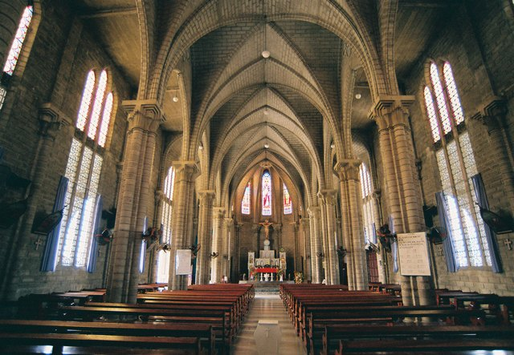

Tạm thời dời tâm trí khỏi những bờ cát trắng, làn nước biển trong lành, ta cũng khám phá “Nhà thờ Núi”, nơi mang trong mình vẻ đẹp hoài cổ qua 80 năm tuổi, toạ lạc giữa trung tâm thành phố Nha Trang.
Đây là một địa điểm du lịch Nha Trang được nhiều người yêu thích. Nhà thờ được xây dựng từ những viên đá lập thể theo lối kiến trúc Gothic đặc trưng. Phần trần có các vòm cuốn hình múi uốn cong thoai thoải. Ngoài ra, nhà thờ còn được lắp các loại kính nhiều màu để khi ánh nắng chiếu rọi tạo nên một không gian màu sắc, đậm chất nghệ thuật. Chính vì những điểm nổi bật này, nhà thờ Núi Nha Trang đã tạo nên sức hút cho du khách khi đến thăm thành phố biển Nha Trang.
Địa chỉ:
Số 1 Thái Nguyên, Phước Tân
Chỗ ăn uống gần đó:
Đứng từ phía cổng, quay vè hướng bên phải sẽ thấy một quán cà phê rất ngon. Vị cà phê thơm, khi uống sẽ cảm nhận được rõ vị đắng, vị chua của hạt, như chính mình biến thành những hạt cà phê ngon lành UwU.